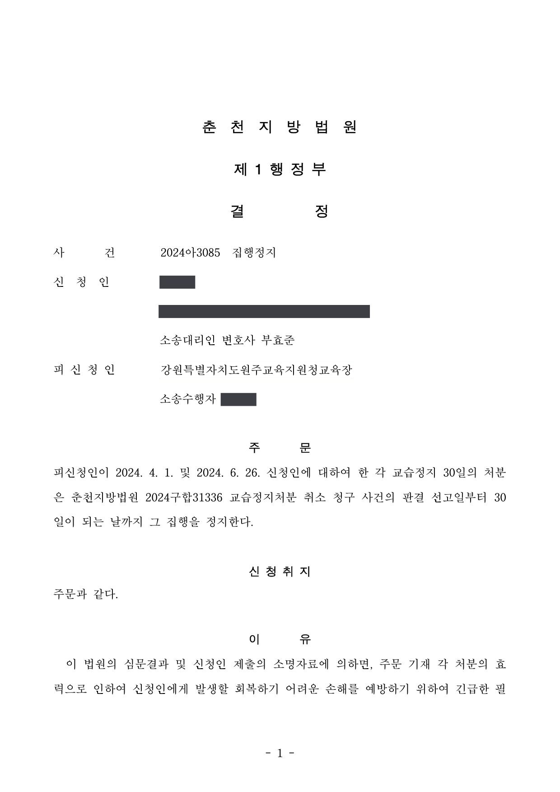

학원 교습정지처분 취소소송 및 집행정지
춘천지방법원 2024구합31336 · 2024아3085 · 학원 설립·운영자 대리 · 담당변호사 부효준
판결문


사건의 요지
학원에 내려진 두 차례의 교습정지 30일 처분에 관하여 집행정지 결정을 받고, 본안에서 처분의 취소를 받았습니다. 처분사유의 존부와 절차, 재량권 일탈·남용이 쟁점이었습니다.
사건의 주요 내용
원고는 2016년부터 학원을 설립·운영해 온 사람입니다. 교육장(처분청)은 2023년 8월 지도·점검 결과를 토대로 같은 해 10월 ‘제장부 미비치, 과대광고’를 이유로 벌점 20점과 과태료 50만 원을 부과하였고(종전 처분), 2023년 12월 다시 지도·점검을 한 뒤 2024년 4월 ① 운영 관련 부조리(수강생의 성명·진학실적을 동의 없이 광고에 사용, 벌점 10점), ② 광고물에 학원 등록번호 미표시(벌점 10점), ③ 허위광고(신고한 교습비와 다른 수강료 표시)와 과대광고(진학실적)의 중복 위반에 과대광고 2회를 적용(벌점 30점)한 사유에 종전 처분의 벌점 20점을 더한 벌점 70점으로 교습정지 30일과 과태료 100만 원을 통지하였습니다(1차 통보).
원고는 1차 통보에 대하여 행정심판을 청구하고 집행정지를 신청하여 2024년 4월 교습정지·벌점 부분의 집행정지 결정을 받았으나, 2024년 6월 행정심판청구는 기각되었습니다. 처분청은 재결 직후 같은 처분사유로 교습정지 기간만 2024년 7월 26일부터 8월 24일까지로 다시 정한 교습정지 30일 처분을 통지하였습니다(2차 통보).
원고는 부효준 변호사를 소송대리인으로 하여 두 통보의 취소를 구하는 소를 제기하면서 법원에 집행정지를 신청하였고, 법원은 2024년 7월 두 처분의 집행을 본안 판결 선고일부터 30일이 되는 날까지 정지하는 결정을 하였습니다. 본안 판결은 2024년 12월 선고되었습니다.
피고의 주장
- 1차 통보는 2차 통보로 대체되어 소멸하였으므로 1차 통보의 취소를 구하는 부분은 부적법하다는 본안전 항변을 하였습니다.
- 처분사유에 관하여는, 수강생이 처분청에 제출한 사실확인서 등을 근거로 원고가 수강생의 성명과 진학실적을 동의 없이 광고에 사용하였다는 점을 포함하여 각 처분사유가 모두 인정된다는 입장이었습니다.
- 처분의 양정에 관하여는, 종전 처분에서 부과한 벌점 20점을 합산하여 벌점 70점을 산정하였고 이는 시·도 교육규칙의 행정처분기준에 따른 것이라는 입장이었습니다.
부효준 변호사의 주장
- 1차 통보에서 정한 교습정지 기간이 재결 이후 일부 진행되었는데 그 기간까지 포함하여 다시 교습정지 기간을 정한 2차 통보는 위법한 이중처분이고, 처분서에 위반행위의 사실관계와 근거 조항을 구체적으로 적지 않아 행정절차법 제23조의 이유제시의무를 위반하였으며, 종전 처분으로 과태료를 부과받은 사유를 다시 포함시킨 것은 일사부재리 원칙에 반한다고 주장하였습니다.
- 처분사유에 관하여, 해당 수강생의 동의를 얻어 성명과 진학실적을 광고에 사용하였고, 등록번호를 적지 않은 것은 사업자등록번호로 착오한 것이며, 광고물의 수강료는 신고한 교습비의 범위 안에 있어 거짓 광고가 아니고, 진학실적은 실제 자료에 근거한 것으로 과대광고가 아니라고 주장하였습니다.
- 처분청이 원고와 대립 관계에 있던 전 강사의 민원을 토대로 사실관계를 분명히 확인하지 않았고, 위반행위의 경위와 종전 처분을 고려하지 않은 채 교습정지 30일을 명한 것은 재량권을 일탈·남용한 것이라고 주장하였습니다.
법원의 판단
법원은 먼저 1차 통보의 취소를 구하는 부분을 각하하였습니다. 선행처분의 주요 부분을 실질적으로 변경하는 후행처분이 있으면 선행처분은 효력을 상실한다는 대법원 판례(2022. 7. 28. 선고 2021두60748 판결)에 따라, 2차 통보는 재결 내용을 고려하여 새로 정한 처분으로서 과태료·벌점 부분이 삭제되고 교습정지 기간이 변경되어 1차 통보를 대체하였으므로, 1차 통보는 효력을 상실하였다고 본 것입니다.
본안에서 법원은 이중처분·이유제시의무 위반·일사부재리 주장은 받아들이지 않았습니다. 행정심판위원회의 집행정지로 1차 통보의 교습정지 기간은 진행하지 않았고 재결서 송달 다음 날부터 30일이 다시 진행하던 중에 2차 통보가 있었으므로 처분청은 효력기간의 시기와 종기를 다시 정할 권한이 있었고, 지도·점검 당시 원고가 작성한 확인서와 사전통지서 등으로 처분의 근거와 이유를 충분히 알 수 있었으며, 종전 처분은 ‘과대광고 1회’, 이 사건 처분은 ‘과대광고 2회’로 처분사유가 서로 다르다는 이유였습니다.
처분사유에 관하여는, 광고에 실린 수강생이 당시 학원 소속 강사에게 자신의 진학실적을 쓰도록 동의하였다는 법정 증언 등에 비추어 그 수강생의 사실확인서는 원고와 갈등 관계에 있던 전 강사의 요청으로 편파적으로 작성된 것이어서 믿기 어렵다고 보아 제1 처분사유(개인정보 무단 사용)를 인정하지 않았습니다. 다만 등록번호 미표시, 신고한 교습비(월 15만~35만 원)와 다른 수강료(15만~30만 원) 표시, 진학실적 과대광고는 처분사유로 인정하였습니다.
그러나 재량권 일탈·남용은 인정하였습니다. 시·도 교육규칙 [별표 3]의 기준에 따르면 인정된 처분사유의 벌점은 등록번호 미표시 10점과 과대광고 2차 위반 30점을 합한 40점으로 교습정지 5일에 해당하는데, 처분청은 교습정지 30일을 명하였으므로 제1 처분사유의 벌점 10점을 더하더라도 기준을 현저히 초과한다는 것입니다. 처분청이 합산한 종전 처분의 벌점 20점은 ‘행정처분을 받은 위반사항별 벌점은 그 행정처분일로부터 소멸된다’는 규정에 따라 이미 소멸하였으므로 합산할 수 없다고 하였습니다. 법원은 2차 통보(교습정지 30일)를 취소하고, 소송비용은 모두 처분청이 부담하도록 하였습니다.
그런데 피고는 원고에 대하여 교습정지 30일을 명하는 이 사건 처분을 하였는바, 이는 피고의 주장처럼 제1 처분사유에 관한 벌점 10점을 합산하더라도 이 사건 규칙 [별표 3]에서 정한 벌점별 행정처분기준을 현저히 초과하는 것으로 보여 이 사건 규칙에서 정한 재량권의 행사 기준을 현저히 일탈하였다고 보인다(피고는 종전 처분 당시 부과하였던 벌점 20점을 합산하여 이 사건 처분을 한 것으로 보이나, 위 [별표 3] 제1의 바목은 ‘벌점별 행정처분기준에 따라 행정처분을 받은 위반사항별 벌점은 그 행정처분일로부터 소멸된다’고 규정하고 있으므로, 종전 처분사유를 이유로 부과되었던 벌점은 종전 처분으로 인하여 소멸되었다고 봄이 타당하여 피고가 이 사건 처분을 함에 있어 종전 처분에서 부과된 벌점을 합산할 수는 없다).
춘천지방법원 2024구합31336 판결 이유 ‘3. 다. (4) 재량권 일탈·남용 여부에 관한 판단 ④’ 부분
선행처분의 내용 중 일부만을 소폭 변경하는 후행처분이 있는 경우 선행처분도 후행처분에 의하여 변경되지 아니한 범위 내에서 존속하고, 후행처분은 선행처분의 내용 중 일부를 변경하는 범위 내에서 효력을 가지지만, 선행처분의 주요 부분을 실질적으로 변경하는 내용으로 후행처분을 한 경우에는 선행처분은 특별한 사정이 없는 한 그 효력을 상실한다(대법원 2022. 7. 28. 선고 2021두60748 판결 등 참조).
앞서 본 인정사실에 변론 전체의 취지를 더하여 알 수 있는 다음과 같은 사정을 종합하여 보면, 2차 통보는 1차 통보의 주요 부분을 실질적으로 변경한 새로운 처분으로서 항고소송의 대상이 되고, 1차 통보는 2차 통보로 인하여 그 효력을 상실하였다고 봄이 타당하다.
춘천지방법원 2024구합31336 판결 이유 ‘2. 나. 판단 (1) 관련 법리, (2) 구체적 판단’ 부분
여기에 표시광고법 제3조 제1항 제1호, 같은 법 시행령 제3조 제1항에 의하면, 거짓ㆍ과장의 광고는 사실과 다르게 광고하거나 사실을 지나치게 부풀려 광고하여 소비자를 속이거나 소비자로 하여금 잘못 알게 할 우려가 있는 광고행위로서 공정한 거래질서를 저해할 우려가 있는 광고를 말하고, 광고가 소비자를 속이거나 소비자로 하여금 잘못 알게 할 우려가 있는지는 보통의 주의력을 가진 일반 소비자가 당해 광고를 받아들이는 전체적․궁극적 인상을 기준으로 하여 객관적으로 판단하여야 하는 점(대법원 2010. 7. 22. 선고 2007다59066 판결 등 참조)을 더하여 보면, 학원설립ㆍ운영자가 학원법 제15조 제4항을 위반하여 ‘교습비등을 거짓으로 표시ㆍ게시ㆍ고지’하였는지의 여부는 학원설립ㆍ운영자가 교육감에게 등록한 교습비등과 표시ㆍ게시ㆍ고지한 교습비등 사이에 차이가 있는지 여부를 기준으로 판단하여야 하고, ‘실제로 지급받고 있는 교습비’를 기준으로 하여 거짓 여부를 판단하거나 학습자에게 더 유리한 금액인지 여부를 고려할 수는 없다.
춘천지방법원 2024구합31336 판결 이유 ‘3. 다. (4) 처분사유의 존부에 관한 판단 (다) 제3-1 처분사유의 존부’ 부분
※ 판결 이유 가운데 이 사건의 판단 기준이 된 부분을 그대로 옮긴 것으로, 당사자 이름 등은 가렸습니다.
이 사건이 보여 주는 것
학원에 대한 교습정지 처분은 시·도 교육규칙의 벌점 기준에 따라 양정되므로, 처분사유 가운데 하나라도 인정되지 않거나 벌점 산정에 잘못이 있으면 처분 전체가 재량권 일탈·남용으로 취소될 수 있습니다. 특히 이 판결은 과태료 등 행정처분을 이미 받은 위반사항의 벌점은 그 처분일에 소멸하므로 뒤의 처분에서 다시 합산할 수 없다는 점을 분명히 하였습니다. 벌점 합산 내역을 처분서와 사전통지서에서 확인하는 것이 대응의 출발점입니다.
한편 교습비 광고가 ‘거짓’인지는 등록한 교습비와 광고에 표시한 교습비가 다른지를 기준으로 판단되고, 실제 받는 금액이나 학습자에게 유리한 금액인지는 고려되지 않으므로 광고의 수강료 표시는 등록 내용과 정확히 일치시켜야 합니다. 또 행정심판 재결 뒤 처분청이 교습정지 기간만 다시 정하여 통지하면 그것이 새로운 처분이 되어 종전 통지에 대한 소는 각하될 수 있으므로 소송 대상을 새 통지로 맞추어야 하며, 본안 판결 전까지 영업을 계속하려면 법원의 집행정지 결정을 함께 받아 두는 것이 중요합니다.
관련 법령학원의 설립·운영 및 과외교습에 관한 법률 제6조, 제8조, 제15조 제3항·제4항, 제17조 제1항·제4항, 제21조 · 학원의 설립·운영 및 과외교습에 관한 법률 시행령 제16조의3, 제20조 · 시·도 학원의 설립·운영 및 과외교습에 관한 조례 제12조, 같은 규칙 제16조 제1항 [별표 3] · 표시·광고의 공정화에 관한 법률 제3조 제1항 제1호, 제5조 제1항 · 행정절차법 제23조 제1항 · 행정소송법 제12조, 제23조 · 행정심판법 제30조, 제48조
관련 단어교습정지학원법벌점 합산과대광고허위광고교습비 거짓 표시등록번호 미표시재량권 일탈·남용집행정지행정심판 재결선행처분과 후행처분이중처분처분 취소
비슷한 처분을 받으셨다면
행정처분은 처분이 있음을 안 날부터 90일 이내에 행정심판이나 취소소송으로 다투어야 하고, 기간이 지나면 돌이킬 수 없는 처분은 집행정지를 서둘러야 합니다. 처분서를 받은 날짜부터 확인해 드립니다.